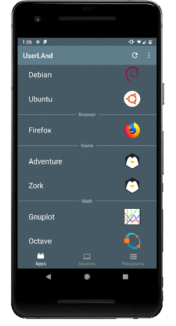
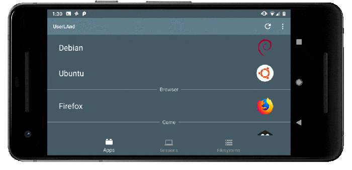
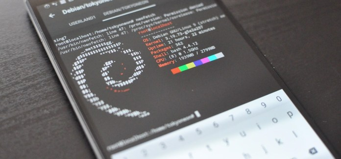

Hey guys, how are you? I am back again with another post. You can also check out my previous post on “Using Android as a Hacking Platform: No Root“. It has hit! With more than 23 hits each day since i posted it. So far it has gained 1,278 views.
With just a few taps, an Android phone can be weaponized into a covert hacking device capable of running tools such as Nmap, Nikto, and Netcat — all without rooting the device.
UserLAnd, created by UserLAnd Technologies, is a completely free Android app that makes installing Linux distributions quick and effortless, without any rooting. With this, it’s possible to run an ARM64 Debian operating system alongside the current Android OS. Sometimes referred to as “AARCH64,” this ARM architecture is the same used by the Kali Linux Raspberry Pi ARM images, which makes it easy to import Kali’s tool repository. And best of all, the UserLAnd team recently added a dedicated Kali filesystem so importing repositories won’t be necessary for all users.
